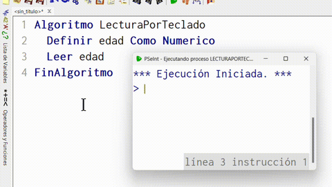
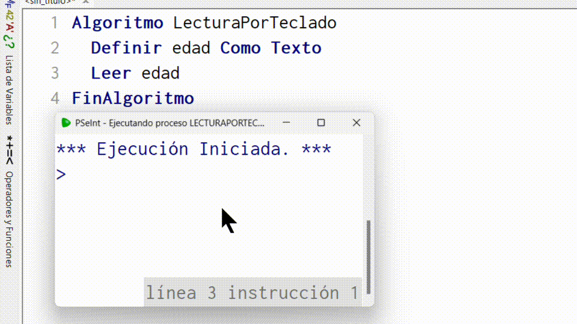
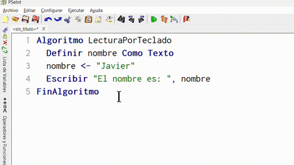
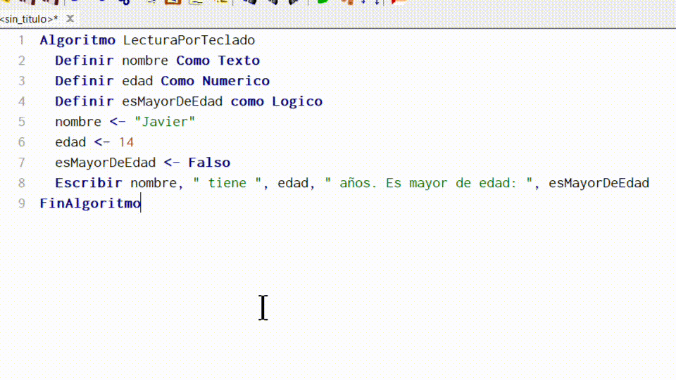

Algoritmo. Parte 2. Programa
Programa
Definición: Un programa es la implementación de un algoritmo en un lenguaje de programación listo para su ejecución.
Mientras que un algoritmo es una idea abstracta de una secuencia de pasos ordenada que puede ser escrito (implementado) en un diagrama de flujo, pseudocódigo o código fuente, solo se llama programa a un algoritmo escrito en código fuente o en un pseudocódigo lo suficientemente bien definido como para que una computadora lo ejecute.
Elementos básicos de un programa
El ser humano razona a partir de los datos que recibe del exterior, los cuales se almacenan en su cerebro. De forma similar, la computadora procesa datos provenientes del exterior, que se guardan en su memoria principal, conocida como R.A.M. (Memoria de Acceso Aleatorio). La R.A.M. está formada por numerosas posiciones o celdas, numeradas de manera consecutiva, capaces de almacenar información.
Tanto el ser humano como la computadora, además de recibir y almacenar datos, pueden interactuar con otras personas o con otros sistemas informáticos.
A continuación exploraremos cómo una computadora recibe y almacena datos del exterior, así como las formas en que interactúa a través de mensajes simples.
Cómo almacena. Variables
Definición: Una variable es una posición de memoria que almacena un valor (o dato).
Antes de ver como recibir datos tenemos que tener algún deposito en donde guardarlos. En un programa hay datos que van cambiando durante el desarrollo del mismo. Para representar y manejar estos datos se usan las VARIABLES.
Las variables ocupan posiciones de memoria y contienen valores. Estas se identifican por un nombre y un tipo de dato.
- El nombre brinda un acceso familiar y reconocible para acceder al valor de la variable.
- El tipo de dato indica que valores puede contener y qué operaciones se pueden realizar con la variable.
Nombre de una variable
Definición: Es un identificador que permite referenciar una variable.
Características del nombre de una variable
- El nombre de una variable tiene que ser significativo.
- Ejemplos:
suma,nombre3,esAlto. - No ejemplos:
s,d2,l2ix.
- Ejemplos:
- No pueden haber nombres repetidos en un mismo programa.
- No se pueden usar palabras reservadas por el lenguaje de programación.
- El primer carácter debe ser una letra o un guión bajo (
_). - Los siguientes caracteres pueden ser letras minúsculas, letras mayúsculas y/o números.
- No puede contener espacios, caracteres especiales, signos de puntuación o letras acentuadas.
- Espacios:
space,enter,tab, etc. - Caracteres especiales:
%,$,&,@,., etc. - Signos de puntuación:
.,;,,, etc. - Letras acentuadas:
ñ,ú,ö,Å, etc.
- Espacios:
| Nombres válidos | Nombres inválidos |
|---|---|
numero1 |
número |
descuento |
20descuento |
totalDeRecargo2 |
total de recargo 2 |
sumaSalarios |
suma$ |
seis |
algoritmo |
Tipo de dato
Definición: El tipo de dato es un indicador que determina los valores que puede guardar una variable y las operaciones que se pueden realizarse con ella.
Un dato o valor puede ser un número entero como el 34, una palabra o varias palabras como "Hola mundo" o valores lógicos (booleanos) como verdadero y falso.
Estos son los tres tipos de datos que usaremos:
| Tipo de dato | Ejemplos de valores | Operaciones |
|---|---|---|
| Numérico | -10, 0, 35 |
Suma, resta, multiplicación, división, etc. |
| Texto | "Permite espacios""2 ñandúes" |
Concatenación. |
| Lógico | verdadero |
Negación, conjunción y disyunción. |
Ejercitación
Indicar cuales de los siguientes nombres de variables son válidos y significativos:
s2k |
$total |
descuento |
cantidadDeNiños |
nombreMoneda |
litrosAgua |
inc |
FinAlgoritmo |
metros |
altura2e |
Etapas de una variable
Una variable pasa por distintas etapas: Definición (o declaración), inicialización, asignación y obtención del valor.
Definición
En esta etapa se crea la variable con algún nombre y se indica de qué tipo de dato es.
Ejemplo de cómo definir una variable llamada apellido como tipo Texto en PSeInt:
1 Algoritmo Definicion
2 Definir apellido Como Texto
3 FinAlgoritmo
Ejemplo de cómo definir una variable llamada edad como tipo Numerico en PSeInt:
1 Algoritmo Definicion
2 Definir edad Como Numerico
3 FinAlgoritmo
Ejemplo de cómo definir una variable llamada esMayorDeEdad como tipo Logico en PSeInt:
1 Algoritmo Definicion
2 Definir esMayorDeEdad Como Logico
3 FinAlgoritmo
En muchos lenguajes de programación, incluido PSeInt, no se permite definir dos variables con el mismo nombre. El siguiente código en PSeInt muestra un error en la línea 3 indicando esto mismo.
1 Algoritmo Definicion
2 Definir numeroDocumento como Numerico
3 Definir numeroDocumento como Texto
4 FinAlgoritmo
Inicialización
Esta etapa se denomina así porque es cuando la variable obtiene su valor inicial o primer valor, siempre dependiendo de su tipo de dato previamente asignado. Si bien algunos lenguajes de programación
Ejemplo de cómo inicializar una variable llamada apellido de tipo Texto en PSeInt:
1 Algoritmo Inicializacion
2 Definir apellido Como Texto
3 apellido <- "Gonzaléz"
4 FinAlgoritmo
Ejemplo de cómo inicializar una variable llamada edad como tipo Numerico en PSeInt:
1 Algoritmo Inicializacion
2 Definir edad Como Numerico
3 edad <- 12
4 FinAlgoritmo
Ejemplo de cómo inicializar una variable llamada esMayorDeEdad como tipo Logico en PSeInt:
1 Algoritmo Inicializacion
2 Definir esMayorDeEdad Como Logico
3 esMayorDeEdad <- Verdadero
4 FinAlgoritmo
Como se observa en los tres ejemplos hechos en PSeInt, antes de inicializar una variable es necesario definir su tipo de dato. Para inicializarla, se debe escribir en una sola línea: primero el nombre de la variable, luego los caracteres <- y finalmente un valor.
Asignación
Aunque la asignación se escribe de la misma manera que la inicialización, se diferencia en que no siempre corresponde al primer valor de la variable, sino que puede implicar la modificación de su contenido. Esta operación puede considerarse destructiva, ya que, en principio, una vez realizada el valor anterior no puede recuperarse dentro de la misma variable.
Ejemplo de cómo asignar en la línea 4 un nuevo valor Texto en PSeInt:
1 Algoritmo Asignacion
2 Definir apellido Como Texto
3 apellido <- "González"
4 apellido <- "Méndez"
5 FinAlgoritmo
Ejemplo de cómo asignar en la línea 4 un nuevo valor Numerico en PSeInt:
1 Algoritmo Asignacion
2 Definir edad Como Numerico
3 edad <- 12
4 edad <- 0
5 FinAlgoritmo
Ejemplo de cómo asignar en la línea 4 un nuevo valor Logico en PSeInt:
1 Algoritmo Asignacion
2 Definir esMayorDeEdad Como Logico
3 esMayorDeEdad <- Verdadero
4 esMayorDeEdad <- Falso
5 FinAlgoritmo
En estos ejemplos se puede ver que la inicialización es solo un caso especial de asignación. A la derecha de los caracteres <- pueden ir más cosas que solo valores, puede haber otra variable y operaciones, como se verá en la siguiente etapa.
Obtención del valor
Una variable se encuentra en la etapa de obtención de su valor cuando aparece a la derecha de la instrucción de asignación, es decir, a la derecha de los caracteres <- en PSeInt. En este caso, la variable no se utiliza para cambiar su contenido, sino para proporcionar su valor a una operación u otra instrucción.
Ejemplo de cómo obtener el valor que guarda apellido para concatenar a la izquierda otro texto en la línea 5 en PSeInt:
1 Algoritmo Obtención
2 Definir apellido Como Texto
3 Definir nombreCompleto Como Texto
4 apellido <- "González"
5 nombreCompleto <- "Martín " + apellido
6 FinAlgoritmo
Ejemplo de cómo obtener el valor que guarda edad para restar en la línea 5 en PSeInt:
1 Algoritmo Obtención
2 Definir edad Como Numerico
3 Definir aniosFaltantes Como Numerico
4 edad <- 12
5 aniosFaltantes <- 18 - edad
6 FinAlgoritmo
Ejemplo de cómo obtener el valor que guarda esMayorDeEdad para negarlo en la línea 5 un nuevo valor Logico en PSeInt:
1 Algoritmo Obtención
2 Definir esMayorDeEdad Como Logico
3 Definir esMenorDeEdad Como Logico
4 esMayorDeEdad <- Verdadero
5 esMenorDeEdad <- no esMayorDeEdad
6 FinAlgoritmo
Cómo interactuar. Lectura por teclado.
Para recibir datos de la persona que utilice nuestro programa (a la que llamaremos usuario), es necesario contar con una instrucción que le indique a la computadora que espere a que se escriba algo en el teclado y, al presionar la tecla Enter, lea lo ingresado y lo guarde en un lugar donde pueda ser utilizado.
En PSeInt se utiliza la instrucción Leer seguido del nombre de la variable que deseamos almacenar el dato recibido por el usuario. Ejemplo:
1 Algoritmo LecturaPorTeclado
2 Definir edad Como Numerico
3 Leer edad
4 FinAlgoritmo
Lo ingresado por el usuario debe coincidir con el tipo de dato definido para la variable en la que será almacenado, sino mostrará un error.

Esto ocurre principalmente con variables de tipo Numerico. En cambio, con variables de tipo Texto no sucede, ya que los caracteres numéricos se interpretan simplemente como texto.

Sin embargo, dependiendo del lenguaje de programación, intentar realizar operaciones numéricas puede producir errores o resultados inesperados.
Por ejemplo, el siguiente código en PSeInt no puede ejecutarse porque (en la línea 5) el carácter + puede interpretarse tanto como una suma como una concatenación. Ante esta ambigüedad, al combinar el valor 10 (de tipo Numerico) con la variable edad (de tipo Texto), el programa impide su ejecución.
1 Algoritmo LecturaPorTecladoConError
2 Definir edad Como Texto
3 Definir aumento Como Texto
4 Leer edad
5 aumento <- edad + 10
6 FinAlgoritmo
Cómo mostrar. Escritura en pantalla.
Hasta el momento solo se han guardado datos predefinidos por nosotros o leídos por el usuario. Para mostrar los resultados de nuestro algoritmo en la pantalla de la computadora se debe utilizar una instrucción especifica para eso. En PSeInt dicha instrucción es Escribir, que hace referencia a que la computadora escribirá en la terminal los valores que le indiquemos a la derecha de esta palabra clave.
Ejemplo simple de como usar Escribir en PSeInt
Algoritmo EscrituraEnPantalla
Escribir "Hola mundo!"
FinAlgoritmo
Para mostrar el valor de una variable con un mensaje se puede usar la coma (,) como separador de parámetros.
Algoritmo EscrituraEnPantalla
Definir nombre Como Texto
nombre <- "Javier"
Escribir "El nombre es: ", nombre
FinAlgoritmo

Esto también puede ser usado con otros tipos de datos que no sean necesariamente Texto, ya que la instrucción Escribir se encarga de convertirlos a texto por nosotros.

Algunos ejemplos más
Problema: Implementar un algoritmo en PSeInt que lea dos números por teclado y escriba en pantalla la suma de dichos números
Código en Pseint:
1 Algoritmo Suma
2 Definir numero1 Como Numerico
3 Definir numero2 Como Numerico
4 Definir suma Como Numerico
5 Escribir "Ingrese el primer número: "
6 Leer numero1
7 Escribir "Ingrese el segundo número: "
8 Leer numero2
9 suma <- numero1 + numero2
10 Escribir "La suma es ", suma
11 FinAlgoritmo
Problema: Crear un código que pida al usuario su nombre, su apellido y su edad y muestre por pantalla los tres datos.
Código en Pseint:
1 Algoritmo PedirDatos
2 Definir nombre Como Texto
3 Definir apellido Como Texto
4 Definir edad Como Numerico
5 Escribir "Ingrese su nombre: "
6 Leer nombre
7 Escribir "Ingrese su apellido: "
8 Leer apellido
9 Escribir "Ingrese su edad: "
10 Leer edad
11 Escribir "Usted se llama ", nombre, " ", apellido, " y tiene ", edad, " años"
12 FinAlgoritmo
Problema: Diseñar un pseudocódigo para promediar dos notas de exámenes para luego imprimir dicho promedio.
Código en Pseint:
1 Algoritmo PromedioDeDosNotas
2 Definir nota1 Como Numerico
3 Definir nota2 Como Numerico
4 Definir promedio Como Numerico
5 Escribir "Ingrese primera nota: "
6 Leer nota1
7 Escribir "Ingrese segunda nota: "
8 Leer nota2
9 promedio <- (nota1 + nota2) / 2
10 Escribir "El promedio de notas es: ", promedio
11 FinAlgoritmo